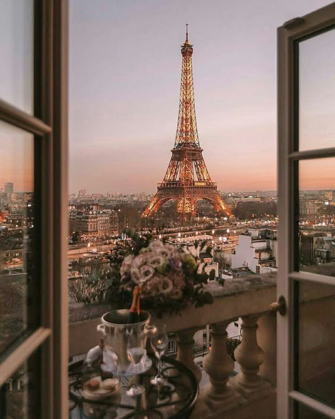

France is my favorite country because everything about it feels so stylish and timeless. The French language is beautiful and has this romantic flow to it that I love.
Fashion there is on another level—people just know how to put together effortlessly chic outfits. Plus, French traditions, whether it’s enjoying a long meal or the way they celebrate art and culture, really appeal to me.
There’s this charm in how they balance modern life with holding onto their history and values, which is something I really admire.
Eiffel Tower

The Eiffel Tower is such an iconic symbol of France, and I can’t help but love it! It’s amazing how this giant iron structure captures the heart of Paris.
I love the way it sparkles at night; it adds a magical touch to the city. Whether you're enjoying a picnic on the Champ de Mars or just gazing up at it from the streets, there’s something special about being around the tower.
It’s a must-see for anyone visiting, and it really makes you feel the romance and charm of Paris!
Boris Lumé Boulangerie
Boris Lumé Boulangerie is such a cute spot in *Miraculous: Tales of Ladybug & Cat Noir*! It’s not just any bakery; it’s where Marinette and her friends hang out, and it always feels so cozy and welcoming.
Boris is like the sweetest guy, always ready with a smile and the most delicious pastries. I love how it’s a place where Marinette can escape her superhero life for a bit and just be herself.
Plus, the bakery is filled with so much charm and Parisian flair—who wouldn’t want to grab a croissant there?
It really captures the magic of friendship and community in the show!